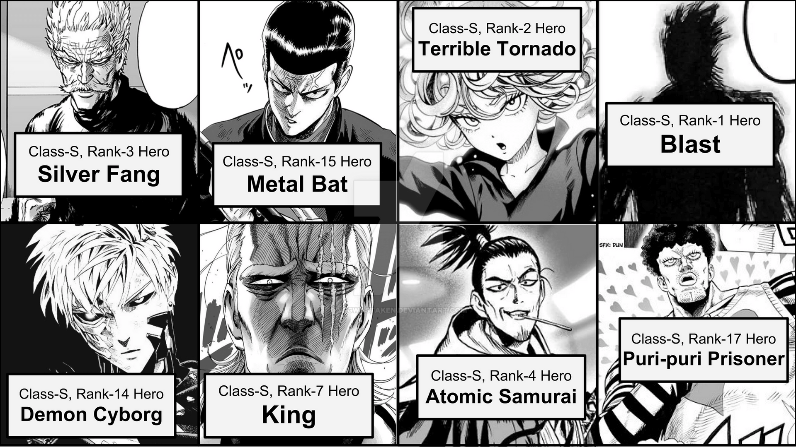
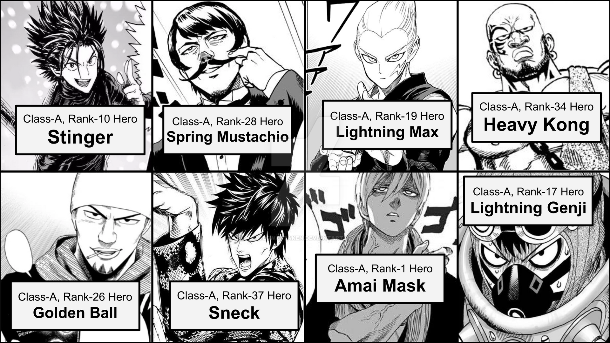
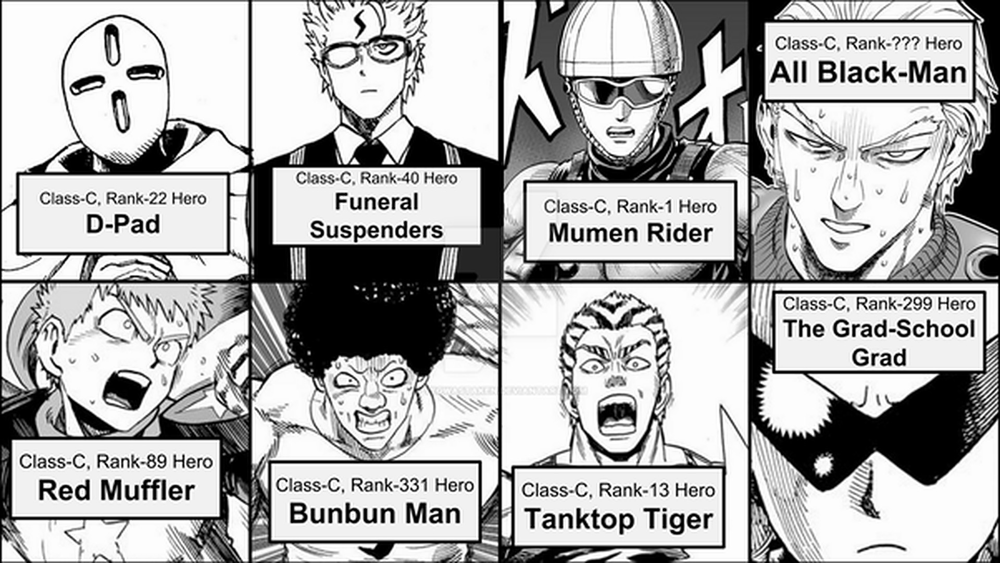

One-Punch-Man Hero classes

At the pinnacle of the hero ranking system is the
S-class. There are currently only 17 individuals
with this ranking. Members of this rank must be
extremely powerful and most can can individually
defeat a demon ranked threat.

Following the S-class is the A-class. Currently there
are 38 members and all are very capable fighters.
These members are a good bit weaker then the S-class, but
have built a strong reputation and are well known and considered
very reliable. Heroes in this class are capable of defeating
threat level tigers on their own.
 3rd in the classification is the B-class. Currently there are 101 members.
Typically B-class fighters are a step down considerably from
the prior 2. These are still capable fighters but usually form
groups as they are not able to defeat any strong enemies or
monsters alone. The top of the B-class are strong individual fighters,
however, and are also well known.
3rd in the classification is the B-class. Currently there are 101 members.
Typically B-class fighters are a step down considerably from
the prior 2. These are still capable fighters but usually form
groups as they are not able to defeat any strong enemies or
monsters alone. The top of the B-class are strong individual fighters,
however, and are also well known.

C-class is the weakest of the classes and by far the largest. Currently
there are 390 members but it is a volitle number. Members in this class
typically are of average human strength and mmust perform weekly heroic
acts to fufill their quotas to remain apart of the hero registry.
These heroes are usually accomplishing feats against typical acts of
violence or in groups against wolf level threats.